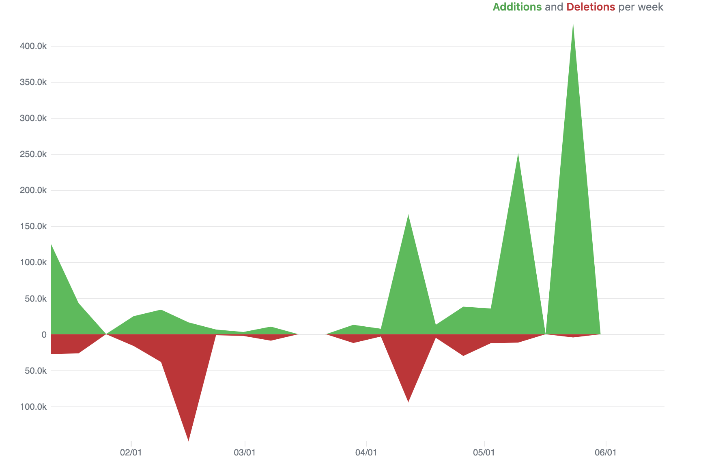
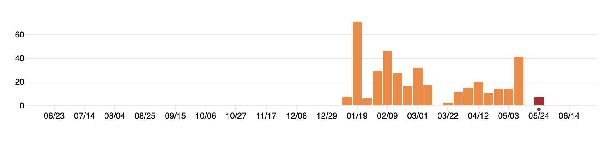

For many years, use of version control required use of the command line, limiting its accessibility to researchers with limited programming experience. However, graphical interfaces have removed this barrier, and RStudio has particularly user-friendly tools for implementing version control. In this module, we will show how to use git through RStudio’s user-friendly interface and how to connect from a local computer to GitLab through RStudio.
Objectives. After this module, the trainee will be able to:
In this chapter, we will give you an overview of how to use git and GitHub for your laboratory research projects. In this chapter, we’ll address two separate groups, in separate sections. First, we’ll provide an overview of how you can leverage and use these tools as the director or manager of a project, without knowing how to code in a lanugage like R. GitHub provides a number of useful tools that can be used by anyone, providing a common space for managing the data recording, analysis and reporting for a scientific research project. In this case, there would need to be at least one member of your team who is comfortable with a programming language, but all team members can participate in many features of the GitHub repository regardless of programming skill.
Second, we’ll provide some details on the “how-tos” of setting up and using git and GitHub for scientists who are programmers or learning to program in a language like R or Python. We will not be exhaustive in this section, as there are a number of excellent resources that already go into depth on these topics. Instead, we provide an overview of getting starting, and what tools you might want to try within projects, and then provide advice on more references to follow up with to learn more and fully develop these skills.
Because git has a history in software development, and because most
introductions to it quickly present arcane-looking code commands, you may have
hesitations about whether it would be useful in your scientific research group
if you, and many in your research group, do not have experience programming.
This is not at all the case, and in fact, the combination of git and GitHub can
become a secret weapon for your research group if you are willing to encourage
those in your group who do know some programming (or are willing to learn a bit)
and to take them time to try out this environment for project managemment.
As mentioned in the previous two chapters, repositories that are tracked with git and shared through GitHub provide a number of tools that are useful in managing a project, both in terms of keeping track of what’s been done in the project and also for planning what needs to be done next, breaking those goals into discrete tasks, assigning those tasks to team members, and maintaining a discussion as you tackle those tasks.
While git itself traditionally has been used with a command-line interface
(think of the black and green computer screens shown when movies portray hackers),
GitHub has wrapped git’s functionality with an attractive and easy to
understand graphical user interface. This is how you will interact with a project
repository if you are online and logged into GitHub, rather than exploring it
on your own computer (although there are also graphical user interfaces you can
use to more easily explore git repositories locally, on your computer).
[Give a brief “tour” of a GitHub repo? One that we set up with some example data?]
Key project management tools for GitHub that you can leverage, all covered in subsections below, are:
Successfully using GitHub to help track and manage a research project does not require using all of these tools, and in fact you can go a long way by just starting with a subset. The first four covered (Commits, Issues, Commit history, and Repository access and ownership) would be a great set to try out in a first project.
Commits
[Some about making commits straight from GitHub]
Issues
[Tracking the “to-do” list with the Issues page]
Commit history
[How to read through the history of changes to the repository from GitHub]
Repository access and ownership
[Make it so people can see and make changes to the repository]
Insights
Each GitHub repository also provides an “Insights” page, which lets you see who is contributing to the project and, as well when and how much they have contributed, as tracked by the commits they’ve made.
First, this page provides some repository-wide summaries, regardless of who was contributing. The figure below shows an example of the “Code frequency” graph, showing the number of additions and deletions to the code each week (here, “code” means any data in the tracked files, so it would include data recorded for the project or text written up for a project report or presentation [double-check that this is the case]).

During periods when the research team is collecting data, you would expect a lot more additions that deletions, and you could check this plot to ensure that the team is committing data soon after it’s recorded (i.e., that there are lots of additions on weeks with major data collection for the experiment, not several weeks after). Periods with a lot of deletions, aren’t bad, but instead likely indicate that a lot of work is being done in editing reports and manuscripts. For example, if a paper is being prepared for publication, you’d expect a lot of delections as the team edits it to meet word count requirements.
The “Insights” page on a GitHub repository also lets you track the frequency of commits to the project, where each commit could be something small (like fixing a typo) or large (adding new data files for all data recorded for a timepoint for the experiment). However, the frequency of these commits can help identify periods when the team is working on the project. For example, the commit history graph shown below is for the GitHub repository for a website for a spring semester course in 2020. It’s clear to see the dates when the course was in session, as well as how the project required a lot of initial set up (shown by the number of commits early in the project period compared to later). You can even see spring break in mid-March (the week in the middle with no commits).

This window also allows you to track the number and timing of commits of each contributor to the project.
Wiki
[Use the Wiki to publish information about the project, especially when you make the project public]
[More on how to get started with GitHub if you’re a programmer]
While this method of merging two sets of changes to a file generally works very well in integrating what members of the team have typed into the file in their edits (i.e., the actual text), it doesn’t do anything to check the logic. If that text is computer code, then the latest version, with code integrated from two people, could be “broken”, even if each person confirmed that the code worked on their own computers before merging, because a change in one spot in code could break something somewhere else in the code. One way to try to quickly identify this kind of a problem is to create small pieces of code that can be run whenever you’d like to check that your code is still behaving like you want it to. These pieces of code are called “unit tests”. They allow you to define how you expect your code to behave—for example, if you have created a function in your code that counts the number of letters in a word, you expect it to always give back “5” for “fever” and “0” for "“. You can write a bit of code that runs the function, using inputs of”fever" and "“, and then tests to see if what it gets in return is”5" and “0”. If it does, great! You won’t hear anything else. If it doesn’t though, it will print out a message to warn you that one of the functions in your code didn’t return what you were expecting it to.
You can collect all of these unit tests in one part of the project directory, and you can even set up a “hook” with your version control program to run all of those tests every time you merge in new changes from team members. If everything still works fine after merging in new changes, it will be a silent success, but if a merge breaks something, you’ll get a noisy failure which, while certainly worse that a silent success, is much, much better than a silent failure. As Mark Twain (supposedly) said, “What gets us into trouble is not what we don’t know. It’s what we know for sure that just ain’t so.”
“It is possible to put hook scripts in [some version control program’s] repository that will fire at various interesting times—notably before each commit, or after. Hook scripts can be used for many purposes, including enforcing fine-grained access control and sending automated commit notifications to mailing lists, bug trackers, or even IRC channels.” (Raymond 2009)
“When the system prints the prompt
$and you type commands that get executed, it’s not the kernel that is talking to you, but a go-between called the command interpreter or shell. The shell is just an ordinary program likedateorwho, although it can do some remarkable things. The fact that the shell sits between you and the facilities of the kernel has real benefits, some of which we’ll talk about here. There are three main ones: (1) Filename shorthands: you can pick up a whole set of filenames as arguments to a program by specifying a pattern for the names—the shell will find the filenames that fit your pattern; (2) Input-output redirection: you can arrange for the output of any program to go into a file instead of onto the terminal, and for the input to come from a file instead of the terminal. Input and output can even be connected to other programs. (3) Personalizing the environment: you can define your own commands and shorthands.” (Kernighan and Pike 1984)
“Suppose you’re typing a large document like a book. Logically this divides into many small pieces, like chapters and perhaps sections. Physically it should be divided too, because it is cumbersome to edit large files. Thus you should type the document as a number of files. You might have separate files for each chapter, called ‘ch1’, ‘ch2’, etc. … With a systematic naming convention, you can tell at a glance where a particular file fits into the whole. What if you want to print the whole book? You could say
$ pr ch1.1 ch1.2 ch 1.3 ..., but you would soon get bored typing filenames and start to make mistakes. This is where filename shorthand comes in. If you say$ pr ch*the shell takes the*to mean ‘any string of characters,’ so ch* is a pattern that matches all filenames in the current directory that begin with ch. The shell creates the list, in alphabetical order, and passes the list topr. Theprcommand never sees the*; the pattern match that the shell does in the current directory generates aa list of strings that are passed topr. The crucial point is that filename shorthand is not a property of theprcommand, but a service of the shell. Thus you can use it to generate a sequence of filenames for any command.” (Kernighan and Pike 1984)
“One of the virtues of the Unix system is that there are several ways to bring it closer to your personal taste or the conventions of your local computing environmentl. … If there is a file named ‘.profile’ in your login directory, the shell will execute the commands in it when you log in, before printing the first prompt. So you can put commands into ‘.profile’ to set up your environment as you like it, and they will be executed every time you log in. … Some of the properties of the shell are actually controlled by so-called shell variables, with values that you can access and set yourself. For example, the prompt string, which we have been showing as
$, is acually stored in a shell variable called ‘PS1’, and you can set it to anything you like, like thisPS1='Yes dear?'. … Probably the most useful shell variable is the one that controls where the shell looks for commands. Recall that when you type the name of a command, the shell normally looks for it first in the current directory, then in ‘/bin’, and then in ‘/usr/bin’. This sequence of directories is called the search path, and is stored in a shell variable called ‘PATH’. If the default search path isn’t what you want, you can change it, again usually in your ‘.profile’. … It is also possible to use variables for abbreviation. If you find yourself frequently referring to some directory with a long name, it might be worthwhile adding a line liked=/horribly/long/directory/nameto your profile, so that you can say things like$cd $d. Personal variables likedare conventionally spelled in lower case to distinguish them from those used by the shell itself, likePATH.” (Kernighan and Pike 1984)
“The culmination of your login efforts is a prompt, usually a single character, indicating that the system is ready to accept commands from you. The prompt is most likely to be a dolloar sign or a percent sign, but you can change it to anything you like… The prompt is actually printed by a program called the command interpreter or shell, which is your main interface to the system. … Once you receive the prompt, you can type commands, which are requests that the system do something. We will use program as a synonym for command.” (Kernighan and Pike 1984)
“While checksums are a great method to check if files are different, they don’t tell us how the files differ. One approach to this is to compute the diff between two files using the Unix tool diff. Unix’s diff works line by line, and outputs blocks (called hunks) that differ between files (resembling Git’s git diff command).” (Buffalo 2015)